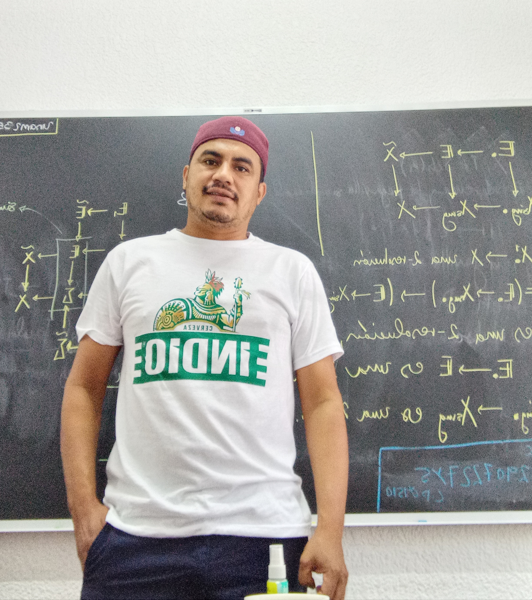

Diosel López-Cruz

My name is Diosel López-Cruz. I'm a mathematician, currently doing my postdoc at the Institute of Mathematics of UNAM under supervision of Pablo Pelaez.
I’m interested in algebraic geometry, in particular algebraic cycles, Hodge theory, regulators, and motivic cohomology.
Curriculum vitae
- 2021: Ph.D. in Mathematics, Centro de Investigación en Matemáticas, Guanajuato, México. Advisor: Pedro Luis del Ángel Rodríguez, Co-advisor: Xavier Gómez-Mont Ávalos
- 2014: M.Sc. in Mathematics, Instituto de Matemáticas, Universidad Nacional Autónoma de México (IM-UNAM). Advisor: Felipe Zaldivar
- 2009: B.Sc. in mathematics, Universidad Nacional Autónoma de México (UNAM)
Here’s my full cv.
Mathematical texts
Here’s also my MSc thesis in Spanish with an overview of pure motives, advised by Felipe Zaldivar.
Contact
diosel@im.unam.mx